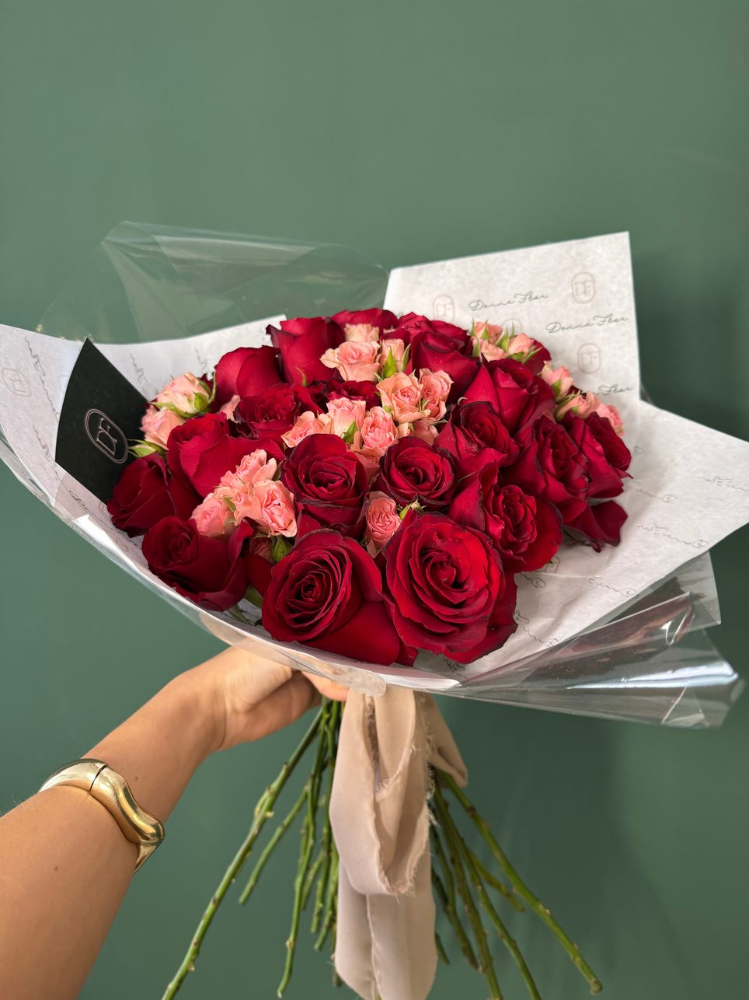
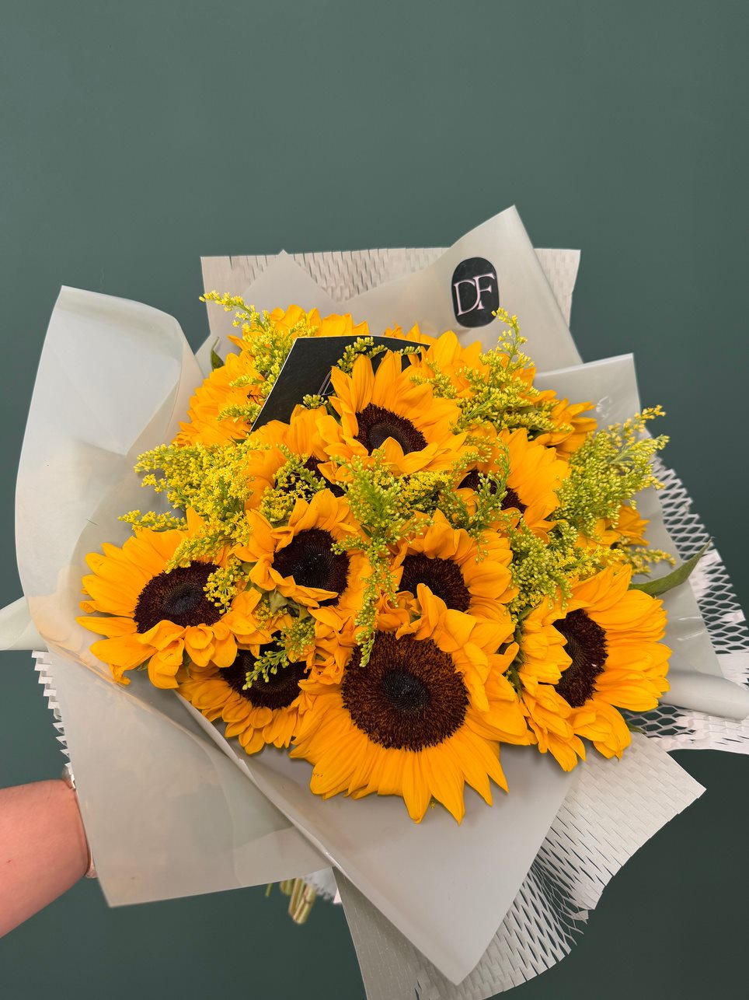
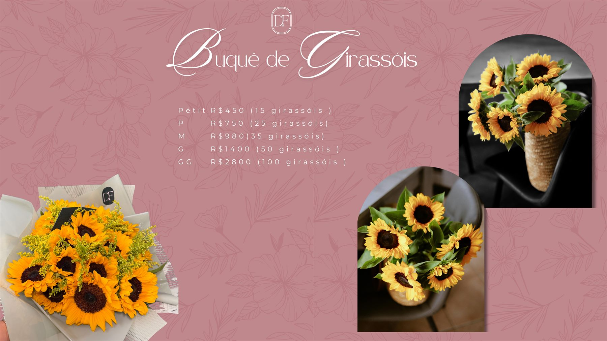
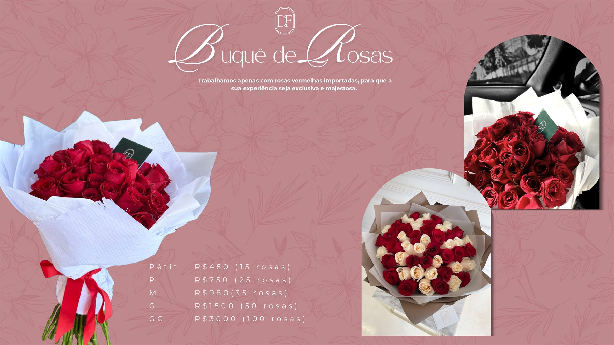
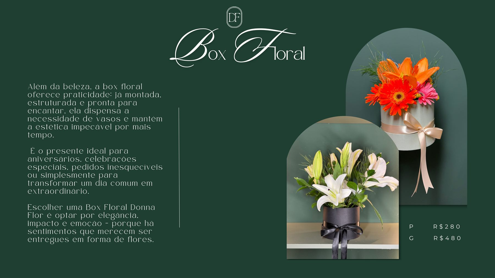

Escolha a intenção
Você conta a ocasião, a paleta desejada e a mensagem que deseja transmitir.
Boutique floral em Santarém
Buquês, boxes e composições autorais criadas com flores nobres, acabamento delicado e intenção em cada detalhe.


Coleção sazonal
Antes da flor, existe o cuidado que ninguém vê. Uma seleção especial para celebrar quem acolhe, nutre e faz o amor florescer todos os dias.
Reservar presenteEscolha pelo sentimento
Clube de Assinatura Floral
Arranjos surpresa com flores frescas, embalagem especial e entrega recorrente.
Vitrine Donna Flor
A vitrine organiza os produtos principais do catálogo com uma experiência mais leve para web: imagens em destaque, preços por tamanho e pedido direto pelo WhatsApp.
Feitos anteriormente
Esta área é pensada para receber fotos reais de buquês já produzidos. Por enquanto, usamos imagens do catálogo como base visual.



Como funciona
Você conta a ocasião, a paleta desejada e a mensagem que deseja transmitir.
A composição é pensada com flores nobres, frescas e acabamento autoral.
O pedido é confirmado no WhatsApp e a entrega é combinada com cuidado.
Funcionamento: segunda à sexta das 9h às 18h e sábados das 9h às 15h.
Sobre nós
A Donna Flor nasce como um resgate da essência de cultivar o tempo, o cuidado, a leveza e a vida através das flores. Cada arranjo é pensado com carinho, cada combinação de cores é escolhida com intenção e cada entrega é feita para emocionar.
Somos um Ateliê Floral de alto padrão, onde cada criação é autoral e cuidadosamente elaborada com flores nobres, raras e importadas.
Donna FlorDúvidas rápidas
As fotos servem como referência estética. As flores podem variar conforme disponibilidade, mantendo a proposta, paleta e padrão Donna Flor.
Sim. O atendimento pelo WhatsApp ajuda a definir ocasião, mensagem, cores, tamanho e estilo do arranjo.
Sim. Flores são sazonais, por isso o pedido final é confirmado no atendimento antes da produção.
Travessa Dom Amando, 1045 - Santa Clara
(93) 99191-8587
Chamar no WhatsApp